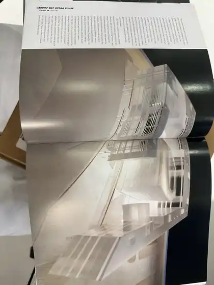

Three books, three pages
In The Library of Babel, Borges imagines a library that holds every possible book. Almost all of them are noise, so a page picked at random is almost always meaningless. I checked out three architecture books and opened each one to a page. None of them were noise. Each page had one idea clear enough to build a whole building on, and each idea got there a different way.

01 / A diagram
Cardiff Bay Opera House, Zaha Hadid
Hadid won the competition for this opera house, won it again when it was re-run, and it still never got built because the lottery funding was pulled. It nearly ended her career before her first big building.
The idea on the page is simple. The building runs as one continuous band around the edge of the site. The auditorium and rehearsal halls hang off that band like jewels turned inward, which the text calls an "inverted necklace." The middle is left open as a public courtyard.
What I take from it: the whole building comes out of one sentence. I want my eyewear project to work the same way. The band stays the same and the jewels change.

02 / A story
Casa Batlló, Antoni Gaudí
Casa Batlló isn't a new building. It's an ordinary apartment block from 1877 that the owner wanted to tear down. Gaudí talked him into transforming it instead.
The usual reading is Saint George and the dragon. The roof tiles are the dragon's scales, the tower with the cross is the lance, and the balconies are the skulls of its victims, which is why people call it the House of Bones. The page also points out how many craftsmen built it: ironworkers, tilers, glass makers and ceramicists. Gaudí also designed chairs shaped around the body.
What I take from it: once there's a story, every part gets a job. Those bone balconies look a lot like the mask I 3D printed.

03 / A use
Feyenoord Stadium "De Kuip", Brinkman and Van der Vlugt
De Kuip means "the tub." Two tiers of stands wrap the pitch in one curved bowl, held up by an exposed steel frame. The upper tier is supported from behind, so no columns block anyone's view, and the stands are steep and close to the field. It's still Feyenoord's home ground.
The text on the same spread is about J.J.P. Oud, who started in De Stijl with Mondrian and Rietveld and then spent his career designing cheap, clean housing for working families in Rotterdam.
What I take from it: the form comes straight from what the crowd needs to see and feel. I've played football my whole life, and that's the lesson for the wearable I'm designing for athletes.